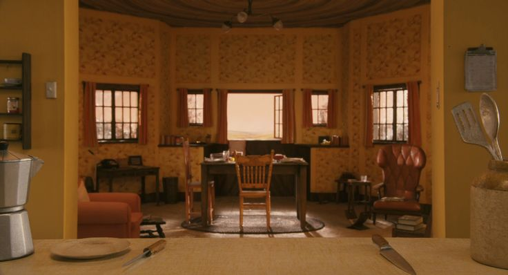

01 / 05
LA CASA
DEL ÁRBOL
El recorrido comienza en la casa de la familia Fox. Es un espacio aparentemente tranquilo y seguro, pero también es el lugar desde donde Mr. Fox observa las granjas que despiertan nuevamente su deseo de aventura.
La casa representa la estabilidad de su vida familiar, pero también el conflicto entre conformarse con esa vida o volver a comportarse como un animal salvaje.

Desde la casa se pueden observar tres lugares demasiado tentadores...
IR A LAS GRANJAS →